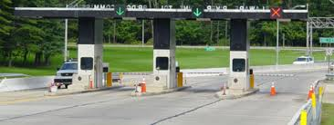

About Toll Gate monitoring
In present day scenario entry and exit of vehicles at the TOLL gate is manual. The vehicles are checked for their registration numbers and then date & time are used to process the toll pass.
The system to be developed proposes that RTA can create a toll administration by dynamically creating TOLL gates and associating the organization maintaining the same. RTA can also provide RF administration. Every vehicle can be associated with an RF card. These are vehicles that use the TOLL frequently. The RTA can then maintain the issue of cards and its association with the vehicle.

When a vehicle arrives at the toll gate the system picks up all associated information using the RF for processing. The system prompts the security personnel with the identity of the vehicle there by preventing any misuse of the card.